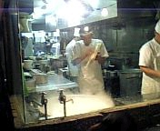

« Swing技術メモ | メイン | Spring on WebLogic Server kit »
2005年10月01日
刀削麺
に行った。
http://r.gnavi.co.jp/g923200/
有名っぽい中華麺屋。
最初は三田のラーメン次郎に行こうということで同僚に誘われていったのだが、あまりの行列に断念して刀削麺(とうしょうめん)になった。
名前の通り麺の元となる塊を特殊な刀（っていうか曲がったへらみたいなもの）で削った麺がでてくる。

職人が麺を削りだしているところ
かなりこってりとした油で覆われた麻婆豆腐っぽい味付けのスープは絶品！
麺は表面はつるつるしていて中身はもちっと、かつほどよいコシがあって飽きさせない。大盛りにすれば良かったとちょっと後悔。
油の膜があるので湯気は全然でないけれども中身はほどよい熱さが保たれている。
麺はかなりぶっといのでのびることなく最後の一本まで楽しい食感。
ラーメンとほうとうのハーフみたいな雰囲気？
禁断症状がでるほどうまいという話はウソではない。まじうまかった。
T澤さん、ありがとうございました！こんどは次郎いきましょう！連れて行ってください！
投稿者 yusuke : 2005年10月01日 01:13
トラックバック
このエントリーのトラックバックURL:
http://yusuke.homeip.net/diary/mt/mt-tb.cgi/306
コメント
次郎じゃなくて二郎な。必ず大ブタダブルを注文するように。で、ラーメンが出される直前にニンニク、ヤサイ、カラメ、と呪文のように唱えるように。
投稿者 Danny : 2005年10月03日 08:09